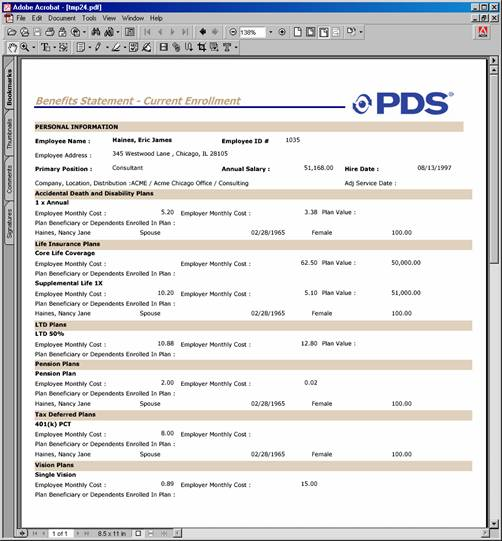
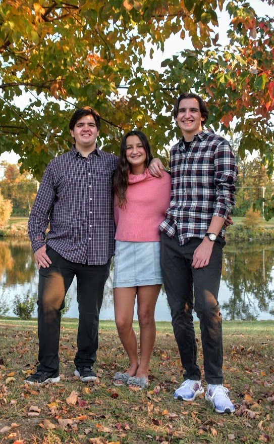

I began my college education at
Truman University, or as it was called then, "Northeast Missouri State University."
I was majoring in pre-med/chemistry, but that didn't last long. Chemistry required Calculus 1-3, but after Calc II, I decided to change
my major to something with less math. Also, Kirksville, MO is a lot colder than
St. Louis, and I wanted to move someplace warmer, so I transfered to the University of South
The University of South Florida
& majored in accounting. During my first year there, I took a computer science class and liked it, so I changed my major to Computer Science.
Florida was beautiful and fun, but was homesick, so I moved back to St. Louis & took classes at
UMSL.
Computer science at UMSL was quite the challenge. The year was 1996, & the title "Computer Programmer" was just becoming a main-stream job. People were signing up for
e-mail addresses on AOL, and companies like Amazon & Ebay were brand-new. My opinion of my programming classes was that you needed to know how
to program before taking
the class. And I did not. Thus began my journey at St. Charles County Community College....
St. Charles Community College had a programming languages certificate, so I signed up for the program.
The classes were much easier than the UMSL programming classes. I learned a lot about basic programming and earned
the certificate. I learned so much, in fact, that I was able to go back to UMSL and do pretty well in the CS classes. Some of the
classes were still really difficult, like "Operating Systems," where we had to create our own operating system, or
"Programming Languages," where we had to write our own programming language. I would say that progrmaming classes in the 90's
were very hard-core compared to today. I feel like the classes were so difficult that the students didn't really learn a lot.
For example, I had a class where the entire grade was two exams. Everyone failed both exams but received a grade of "B". Eventually, I was able to
graduate with a Bachelor's degree from UMSL in Liberal Studies - Chemistry and Computer Science (a "Panera You Pick 2" degree).

Document Programming...and a Bunch of Other Stuff....
During my previous stint as a SCCC students, I had landed a job as a document programmer with a company called TALX.
The programming consisted of pulling processed data into a form and using programming to choose which data is displayed on benefits enrollment worksheets.
It was kind of like a glorified mail merge with benefits enrollment information that was custom to each employee. At some point, some TALX customers had wanted
their employees to be able to enroll in benefits online. This was circa 1999. I had learned some HTML while doing a project in a technical writing class. I
volunteered to work on the websites. I made a few benefits enrollment websites using HTML and Javascript (CSS wasn't a thing yet), and employees were able to see
their custom choices and enroll in their plans. I was given a promotion to Applications Programmer and also began using something (I don't remember what) to format
output data files (carrier files) so that
employee benefit selections could be sent to the insurance carriers.

My three kids - Andy, Joey, and Rachel
Stay at Home Mom
I eventually got married & was pregnant with kid #1 in 2002 (and later two more). I decided to stay home with him and I quit my programming job. Do I regret quitting? Not for a
minute. I wouldn't trade my time with my children
for the whole world. That being said, this isn't really about the kids, so I will move on!
What am I Going to Do Now???
Somewhere around 2010, my youngest was nearing kindergarten age, and I started thinking about going back to work. I looked at listings for programmers and saw a lot of acronyms that I had never
heard of. What the heck is Ruby on Rails??? I decided that I was obsolete as a programmer. I remembered my experience with UMSL computer programming classes (PTSD), and I thought maybe I should do something else.
Maybe (definitely) I watched too many episodes of CSI, but I decided that a job
in a lab working with DNA would be cool. So I took about 1.5 years of classes and finished a Bachelor's of Science degree in Biochemistry and Biotechnology. I had meant to get a
Master's, but got a job instead.